以期間限定舉辦「幕間物語宣傳活動 第3彈」。
宣傳活動舉辦中全部Servant幕間物語的AP消耗量變為1/2！
藉此機會滿足開放條件，通過中意Servant的物語吧！
◆舉辦期間◆
2017年11月2日(四) 17:00～11月15日(三) 11:59
◆對象關卡◆
全部的幕間物語
※也包含自2017年11月2日(四) 17:00開放的幕間物語。
※於2017年10月23日(一) 17:00～11月8日(三) 11:59的期間做為幕間物語AP消耗1/2對象的以下Servant，配合「幕間物語宣傳活動 第3彈」的舉辦期間，期間延長至11月15日(三) 11:59。
・伊莉莎白・巴托里(Lancer)
・玉藻前(Caster)
・卡米拉
・玉藻貓
・清姬(Berserker)


◆開放時間◆ 2017年11月2日(四) 17:00～
◆對象Servant◆
・風魔小太郎
・奧茲曼迪亞斯
・玄奘三藏
・Emiya〔Assassin〕
・克麗奧佩脫拉
・俵藤太
・靜謐的哈桑
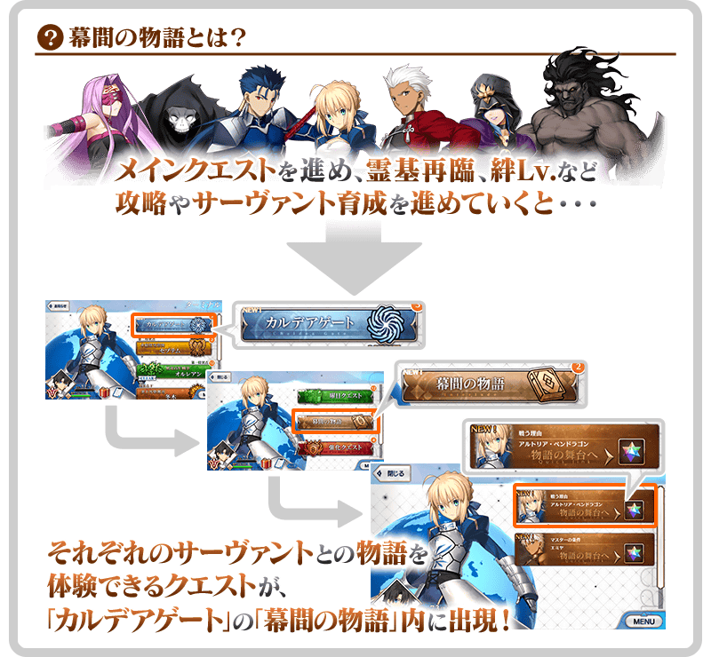
| 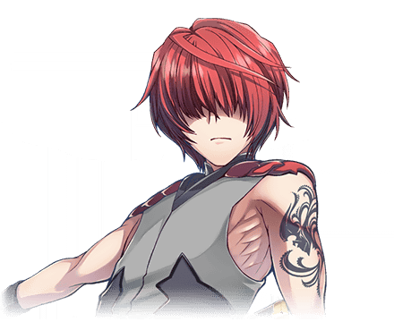 |
◆關卡通過報酬◆ |
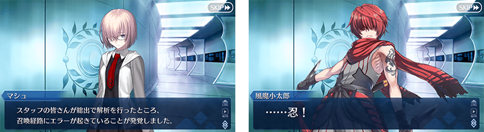
|
◆關卡通過報酬◆ |
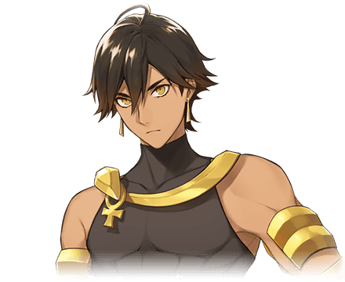 |
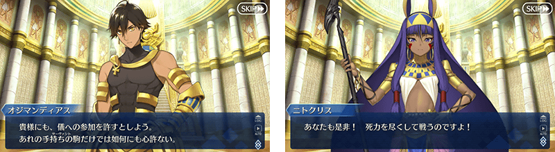
 |
◆關卡通過報酬◆ |

|
◆關卡通過報酬◆ |
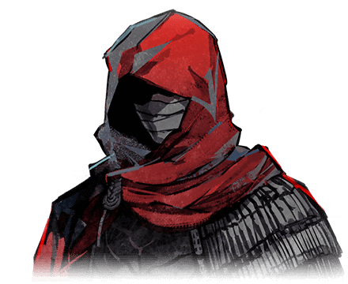 |
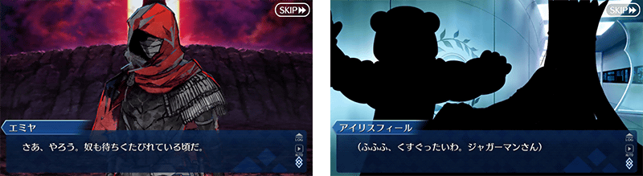
|
◆關卡通過報酬◆ |
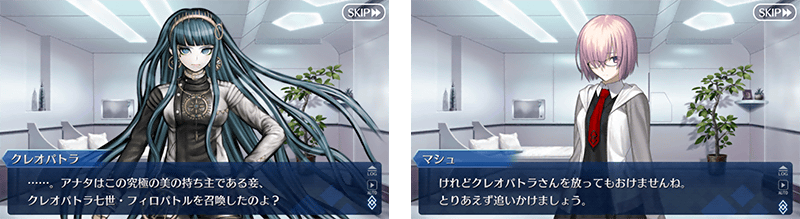
|
◆關卡通過報酬◆ |
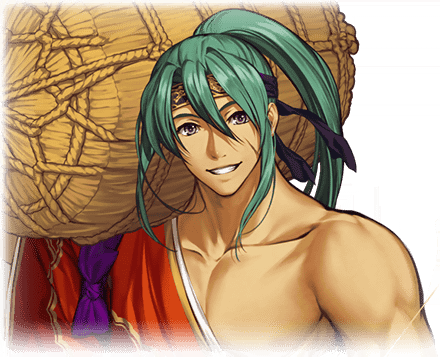 |
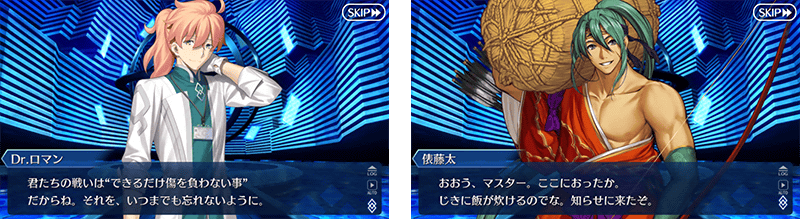
|
◆關卡通過報酬◆ |
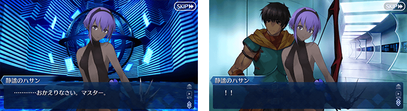
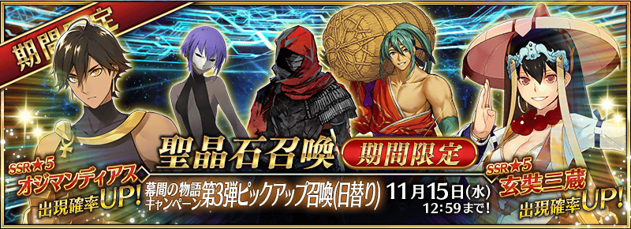
◆「幕間物語宣傳活動 第3彈Pick Up召喚(每日交替)」期間◆
期間:2017年11月2日(四) 17:00～11月15日(三) 11:59
舉辦期間限定「幕間物語宣傳活動 第3彈Pick Up召喚(每日交替)」！
從「幕間物語宣傳活動 第3彈」新開放幕間物語的Servant中，「★5(SSR)奧茲曼迪亞斯」「★5(SSR)玄奘三藏」以每日交替Pick Up！
另外，「★4(SR)Emiya〔Assassin〕」「★3(R)俵藤太」「★3(R)靜謐的哈桑」常駐Pick Up。
詳情請在聖晶石召喚畫面左下的召喚詳細確認。
※奧茲曼迪亞斯、玄奘三藏、Emiya〔Assassin〕、俵藤太、靜謐的哈桑在Pick Up期間結束後也可在故事召喚抽出。
Pick Up期間中，Pick Up Servant的出現機率提升！
10次召喚中確定1張★4(SR)以上和確定1位★3(R)以上的Servant！
※確定★4(SR)以上包含Servant和概念禮裝。
※所謂「出現機率提升」意指比同稀有度的Servant出現機率更高的設定。
| 每日交替Pick Up期間 | 每日交替Pick Up內容 |
|---|---|
| 11月2日(四) 17:00～ 11月3日(五) 22:59 |
奧茲曼迪亞斯 玄奘三藏 |
| 11月3日(五) 23:00～ 11月5日(日) 22:59 |
玄奘三藏 |
| 11月5日(日) 23:00～ 11月7日(二) 22:59 |
奧茲曼迪亞斯 |
| 11月7日(二) 23:00～ 11月9日(四) 22:59 |
奧茲曼迪亞斯 玄奘三藏 |
| 11月9日(四) 23:00～ 11月11日(六) 22:59 |
玄奘三藏 |
| 11月11日(六) 23:00～ 11月13日(一) 22:59 |
奧茲曼迪亞斯 |
| 11月13日(一) 23:00～ 11月15日(三) 11:59 |
奧茲曼迪亞斯 玄奘三藏 |
※請注意會以每日交替變更Pick Up的Servant。
介紹奧茲曼迪亞斯、玄奘三藏的寶具演出！
在Fate/Grand Order官方網站內的公告中，公開了「★5(SSR)奧茲曼迪亞斯」、「★5(SSR)玄奘三藏」的寶具演出。敬請確認。
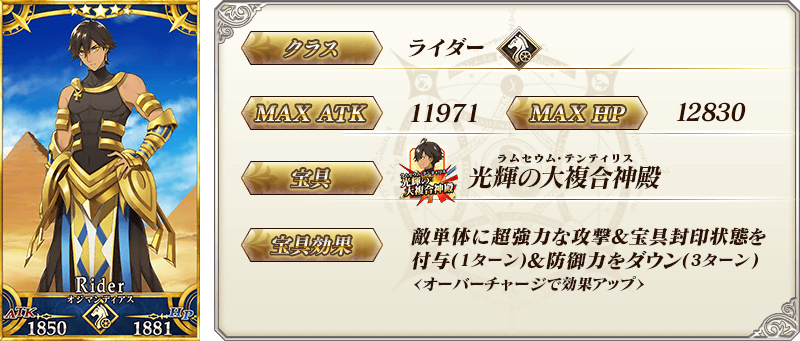
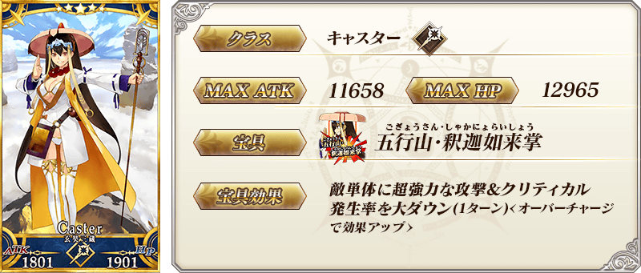
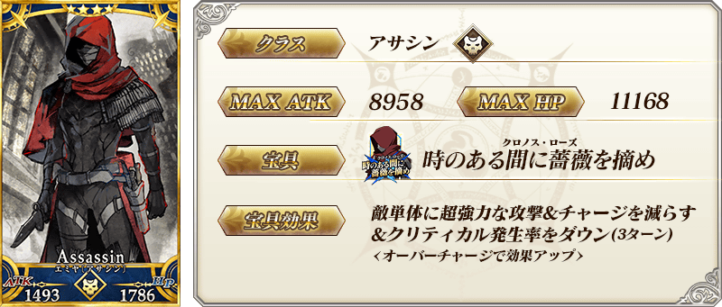


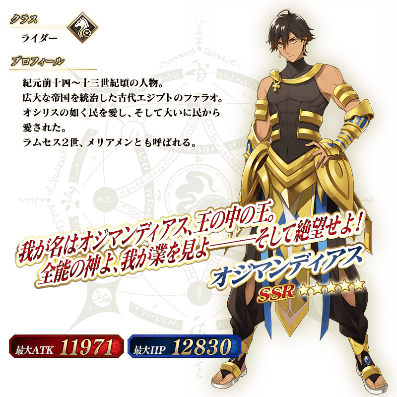
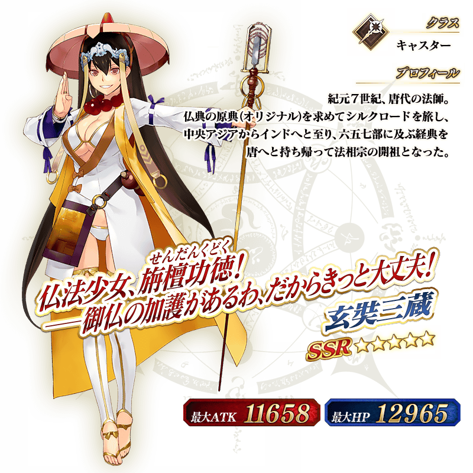